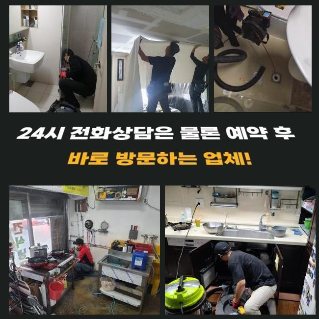
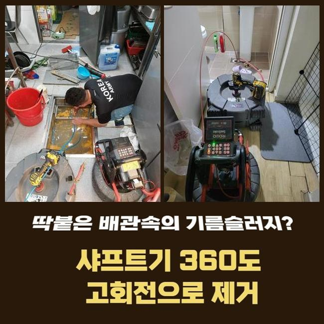
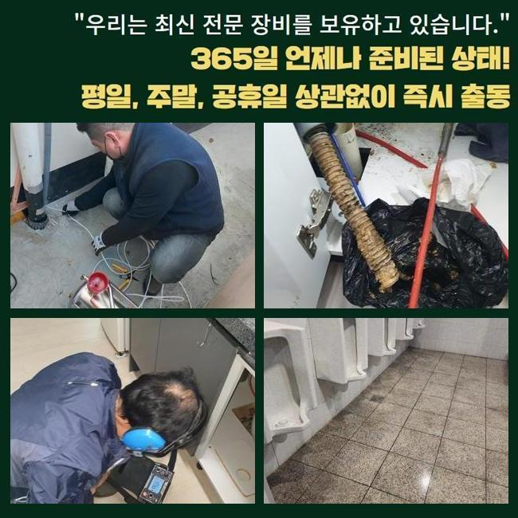
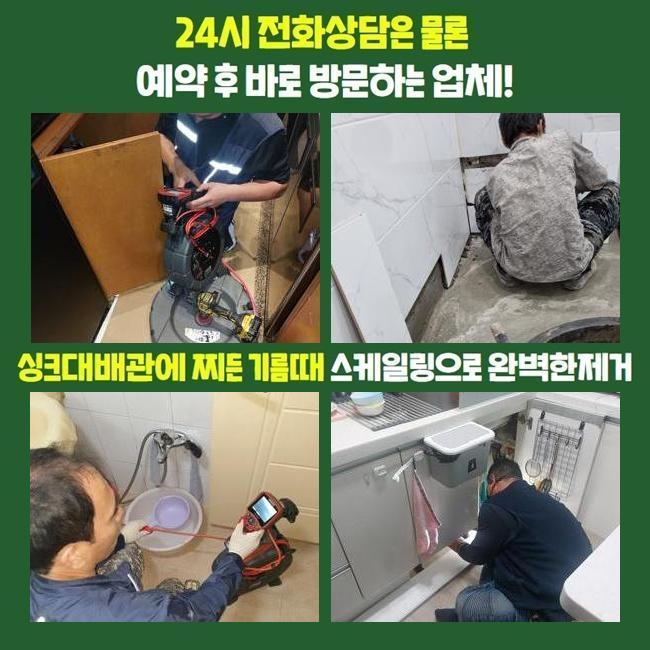
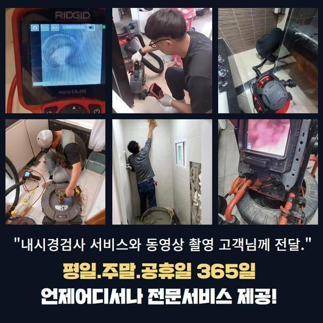
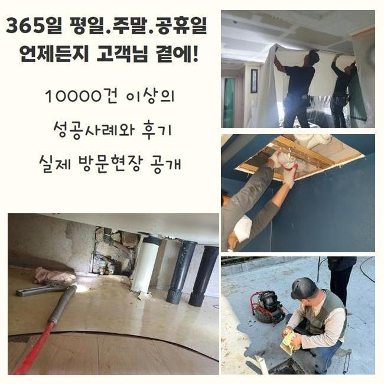

🏠 포천시 화장실천장누수 김포 하수구뚫는비용
용인 하수구막힘 전문 시공 후기

📋 작업 개요
- 위치: 용인
- 서비스 유형: 하수구막힘, 배관막힘, 누수수리, 역류해결, 뚫는업체, 배관청소
- 작업 일시: 2024. 12. 1. 8:50
- 업체명: 하수구수사대 (010-5615-2118)
🔍 문제 상황
포천시 화장실천장누수 김포 하수구뚫는비용
배수시설에 이상들이 야기되어 막히게되는 사태가 걷잡을 수 없단 상황을 전해듣고 배수관의 진단을 실시하기 위하여 서둘러 달려갔죠
배수시설은 가볍게 끝날 수 없고 역류되거나 악취들이 올라오는 발전된 양상들로 진행될 수 있는 확률이 높아서 원활한 처리가 필요하겠습니다
이러한 결함들을 관찰했을 때에는 일단은 대응을 떠올리는게 중요하겠습니다
더 나아가 관로의 문제는 내버려둔다면 증상들이 확대되는 시간까지 가속화되기에 조속한 처리가 중요한것이죠
앞으로 배수시설의 중요도와 연관된 증세가 발생된 시점에서 어떤 방법을 통하는게 제대로 된 해결책인지 저희업체가 달려갔던 현장내용을 토대로 말씀드릴게요
의뢰인의 연락으로 저희의 전문진이 방문드린 스팟은 구분건물로서 가구들이 메인관로를 통하는 구조였는데요
막힘이 발발해서 라인마다 이런저런 증상이 나타났고 더군다나 하단에 위치한 가구들은 물들을 이용하지 못하게끔 증상들이 가볍지 않았죠

🔎 원인 분석
💡 전문가 진단: 정밀 진단 장비를 사용하여 슬러지의 고착 여부를 판명하고 타격/세척 작업을 실시했습니다.
저희들은 피해규모를 막기위하여 운용할 기계들을 마련하고 서둘러 고객님이 계신 곳에 내방드렸는데요
보통 배수가 안되는 문제는 여러 스팟에서 생기게 될 여지가 있죠
전 가구가 공용배수관을 통하기에 구간별로 막혔을 땐 거시적으로 피해들을 전가시키는데요
해당 상황에서 알맞은 대응이 없을 시 현 상황은 발전되어 예고없는 피해규모를 주게됩니다
물빠짐 결함의 원인 중 하나는 심층부에까지 쌓여진 기름때에요
일상 중에 흐르는 수도속엔 용해되지 못하는 잔해가 포함돼있어요
가령 머리카락등이나 식자재들은 제대로 배출이 안되어 배수관에서 조금씩 축적되요
잔해가 연결부분에라도 누적되면 배수의 흐름들을 막아 여러 문제들이 나타나는것이죠
이러한 문제가 분명함을 마주하지 않기위해선 트랩들을 놓으시거나 때에 맞춰 클리너들을 부어 관리해주셔도 좋답니다

🔧 작업 과정
막혀버리는 상황이 마주했을 때에 안전한 것은 전문업체의 손길을 빌리는건데요
반대로 금액문제들로 대다수 인원이 주위에 존재하는 도구들로 조치를 실시하시는 현장을 많이 봐왔죠
그러나 이는 비장기적인 방식들에 그침과 동시에 더군다나 이물을 심층부로 흘러가게 만들어 파손까지 발생케 할 가능성이 있다는 사실이겠습니다
그렇기에 이러한 시도의 경우 증상의 경중을 심화시키기에 올바른 방법을 통해야 하는데요
저희전문진은 이러한 결함들을 근본적으로 파헤치기 위해 내시경장비를 사용한 후 하수관을 여기저기 진단하죠
내시경의 경우 각 라인을 보여주는 장비로서 바깥에서 볼 수 없는 구조적인 결함을 체크하고 해당 위치들을 손쉽게 파악하게 됩니다
이번 현장으로서는 공동배수관로와 더불어 길게 오염원들이 누적되었던 모습이였죠
보통는 전동 스프링기라던지 샤프트기기를 운용하여 잔여물질을 청소하지만 오늘처럼 범위별로 막혔을 경우 고압노즐분사가 필요하겠습니다
해당 작업은 해당 라인에 알맞은 노즐파츠를 끼워 고압수로 내측을 청소시키는 절차에요
이러한 절차는 돌과 같이 굳어진 이물을 조속히 제거시키고 하수도가 오랫동안 배수가 안된 상태일때 그 역할을 톡톡히 합니다
허나 하수관의 강도 등에 따라서 고압분사가 약해진 관로에 피해를 발생시키기도 하므로 관로의 상태들을 체크해보고 청소하고자 하는 범위별로 압을 조정하는게 중요하답니다
고압수청소를 지속시키면 오랫동안 누적된 오염원들이 사라지는것을 체크할 수 있어요
청소가 일단락되면 각 구간을 내시경기기로 확인하면 처음의 모습과는 다르게 배수관의 컨디션이 확실하게 차이난다는것을 보게됩니다
이와같이 전문적인 기계들을 사용한다면 하수구 이상 증세를 수월하게 풀어갈 수 있죠


✅ 작업 완료
저희들은 고객분이 이러한 문제들로 스트레스를 받고 계시는 중이라면 빠르게 해결할 목적으로 언제라도 찾아뵐 채비를 하고 있어요
증세를 목격했을 땐 방치하기보다는 연락하신다면 안정적으로 도움될 수 있도록 할게요
배수가 안되어 인한 피해를 막기위하여서는 때에 맞춰 청소나 관리들이 가장 우선되겠습니다
이용하시면서 관리해주시는 방식으로 통수 관련 사고가 나타날 수 없게끔 예방에 힘쓰는것이 좋겠습니다



⚠️ 베란다 누수 및 방수 관리 방법
- ✅ 비가 많이 올 때 창틀 주변이나 아래층 천장에 얼룩이 생기는지 정기적으로 확인해 보세요.
- ✅ 우수관 주변 실리콘 마감이 들뜨거나 깨진 틈새가 있는지 손상 여부를 수시로 체크하세요.
- ✅ 베란다 바닥 타일의 줄눈(메지)이 소실되면 그 틈으로 물이 침투하여 누수가 유발됩니다.
- ✅ 누수 의심 증상 발견 시 방치하면 아래층 손실이 커지므로 즉시 전문가의 진단을 받으십시오.
💡 핵심 정리
- 확실한 장비 작업(내시경 점검 및 샤프트 스케일링)으로 원인을 뿌리 뽑습니다.
- 작업 후 1년 이내에 동일한 부위 재발 시 100% 무상 A/S 서비스를 보장합니다.
- 서울 · 경기 · 인천 전 지역에 24시간 언제든 긴급 출동할 수 있도록 항시 대기 중입니다.
❓ 자주 묻는 질문 (FAQ)
🚨 용인 하수구막힘 문제로 고민이신가요?
정확한 원인 진단과 확실한 시공으로 재발 없는 해결을 약속드립니다.
24시간 긴급 출동 | 서울 · 경기 · 인천 전지역 | 1년 내 재발 시 무상 A/S